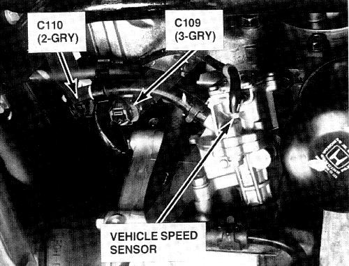

Operation CHARM
: Car repair manuals for everyone.
Home
>>
Acura
>>
1991
>>
Legend Sedan V6-3206cc 3.2L SOHC FI
>>
Repair and Diagnosis
>>
Powertrain Management
>>
Computers and Control Systems
>>
Vehicle Speed Sensor
>>
Locations
Vehicle Speed Sensor: Locations

Lower right front of engine.